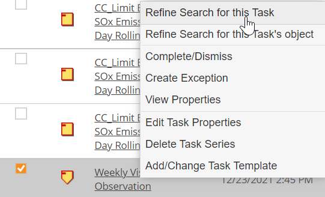
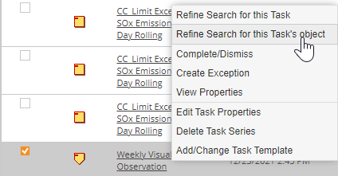
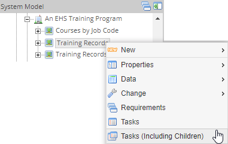
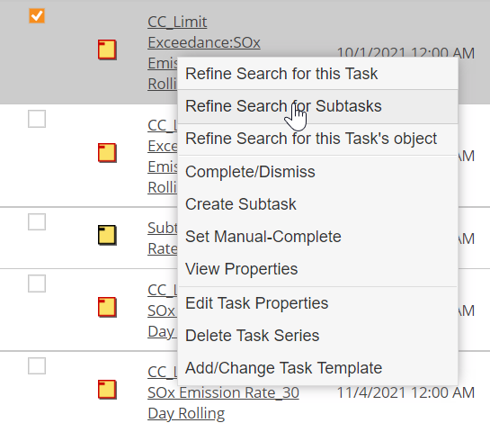

If you cannot see the task(s) you want to view, expand the search pane and modify the default criteria as follows:
Unless an End Date is specified, you will see only the next instance due (starting with today) of a recurring task. If a recurring task has an overdue instance, you will not see that instance unless you pre-date the Start Date to include it.
To refine search results to show multiple instances of a recurring task:
From the task search results, select the task you want, right click the task link and choose Refine Search for this Task.

The search results are automatically filtered for all instances of the selected task, within the due dates range specified. In the expanded search pane, the current filter option (Refine Search for Task) is shown at the top.
From the task search results, select the task you want, right click the task link and choose Refine Search for this Task’s Object.

The search results are filtered for tasks related to the same object. In the expanded search pane, the current filter option (Refine Search for Object) is shown at the top.
Apply the filter by choosing the Tasks (Including Children) option from the right click context menu for an object in the system model tree.

When a filter has been applied, you can remove the filter from the Tasks search section.

Uncheck the box Refine Search for ... at the top of the search pane, then click Search or, click Clear to remove all search criteria. Search criteria reverts to the initial default, My Tasks from today’s date.